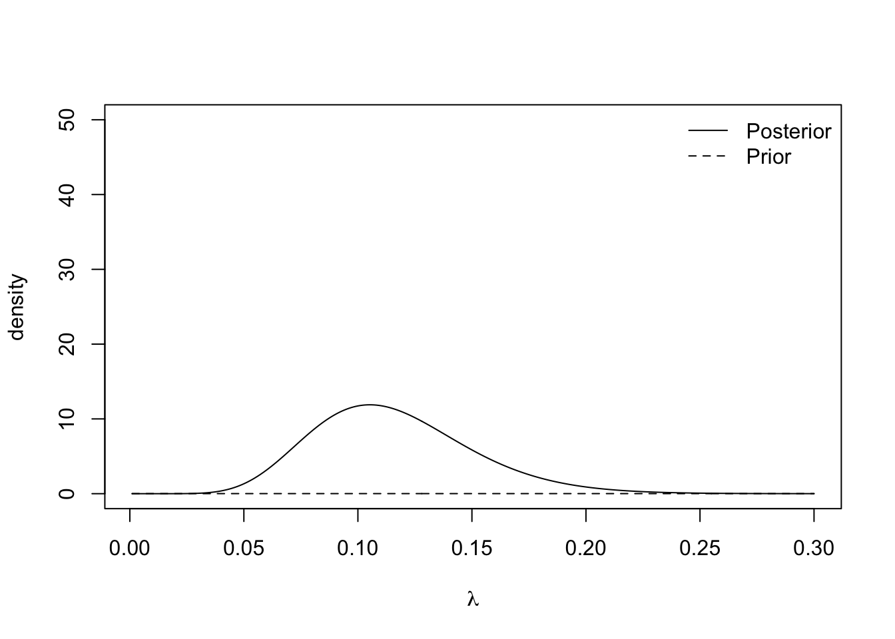

Chapter 11 Repeat steps 3, 4, and 5, for \(i = 2, \ldots M\).
Set initial values \(\{\theta_1^{(0)}, \ldots, \theta_N^{(0)}\}\)
Set \(i = 1\).
2.1 Draw a value for \(\theta_1^{(i)}\) from \(\pi(\theta_1 \mid \theta_2^{(i-1)}, \ldots, \theta_N^{(i-1)}))\).
2.2 Draw a value for \(\theta_2^{(i)}\) from \(\pi(\theta_2 \mid \theta_1^{(i)}, \theta_3^{(i-1)}, \ldots, \theta_N^{(i-1)}))\).
\(\vdots\)
2.N Draw a value for \(\theta_N^{(i)}\) from \(\pi(\theta_N \mid \theta_1^{(i)}, \theta_2^{(i)}, \ldots, \theta_{N-1}^{(i)}))\).
- Repeat step 2 for \(i = 2, \ldots M\).
In code, this might look like
M #number of iterations
N #number of parameters
theta.store <- matrix(NA, N, M)
theta <- numeric(N)
for(j in 1:M){
for(j in 1:N){
theta[i] <- #sample from conditional with theta[-i]
}
theta.store[, j] <- theta.current #store current values
}Example 11.1 In Example 3.5, we had a hierarchical model with
\[\begin{align*}
\boldsymbol{y} \mid \lambda &\sim \hbox{Exp}(\lambda) & \textrm{(likelihood)} \\
\lambda \mid \gamma &\sim \hbox{Exp}(\gamma) & \textrm{(prior distribution)} \\
\gamma \mid \nu &\sim \hbox{Exp}(\nu) & \textrm{(hyperprior distribution)} \\
\end{align*}\].
To derive the full conditional distributions, we only consider the terms in the posterior distributions that depends on the parameters we are interested in. The full conditional distribution for \(\lambda\) is
\[
\pi(\lambda \mid \boldsymbol{y}, \,\gamma) \propto \lambda^{10}e^{-\lambda(95 + \gamma)}.
\]
This is unchanged and shows that \(\lambda \mid \boldsymbol{y}, \gamma \sim \textrm{Gamma}(11, 95 + \gamma)\). The full conditional distribution for \(\gamma\) is
\[
\pi(\gamma \mid \boldsymbol{y}, \,\lambda) \propto e^{-\nu\gamma}.
\]
Therefore the full conditional distribution of \(\gamma\) is \(\gamma \mid \boldsymbol{y}, \,\lambda \sim \hbox{Exp}(\lambda + \nu)\).
We can set up a Metropolis–Hastings algorithm using Gibbs samplers to generate samples for \(\lambda\) and \(\gamma\).
Set initial values \(\{\lambda^{(0)}, \gamma^{(0)}\}\)
Set \(i = 1\).
Draw a value for \(\lambda^{(i)} \mid \boldsymbol{y}, \gamma^{(i-1)} \sim \textrm{Gamma}(10, 95 + \gamma^{(i-1)})\)
Draw a value for \(\gamma^{(i)} \mid \boldsymbol{y}, \,\lambda^{(i)} \sim \hbox{Exp}(\lambda^{(i)} + \nu)\).
Repeat steps 3 and 4 for \(i = 2, \ldots M\).
We can now code this up and run the algorithm.
# Set Up MCMC Algorithm ---------------------------------------------------
n.iter <- 10000
lambda.store <- numeric(n.iter) #Store value of Markov chain at end of every iteration
gamma.store <- numeric(n.iter) #Store value of Markov chain at end of every iteration
# Run MCMC Algorithm ------------------------------------------------------
for(i in 2:n.iter){
#Store current value of Markov Chain
lambda.store[i] <- rgamma(1, 10, 95 + gamma.store[i-1])
gamma.store[i] <- rexp(1, 0.01 + lambda.store[i])
}
#Plot trace plot (Markov chain values)
plot(lambda.store, type = 'l', xlab = "iteration", ylab = expression(lambda))

#Plot posterior density
hist(lambda.store, prob = TRUE, xlab = expression(lambda), main = "Posterior density")
## [1] 0.09561264## 2.5% 97.5%
## 0.0454177 0.1658069
## [1] 10.4679## 2.5% 97.5%
## 0.2437085 40.4251992
11.1 Metropolis-within-Gibbs
Now we have both the Metropolis–Hastings algorithm and Gibbs sampler, we can combine them to create a generic MCMC algorithm for essentially any posterior distribution with any number of parameters. To create our MCMC algorithm, we update any parameters where the full conditional distribution has closed form with a Gibbs sampler. For parameters where the full conditional distribution does not have a closed form, we use a Metropolis–Hastings algorithm to update the parameters.
Example 11.2 Suppose \(X_1, \ldots, X_N \sim \hbox{Weibull}(\beta, \theta)\), where \[ \pi(x \mid\beta,\theta) = \frac{\beta}{\theta}x^{\beta - 1}\exp\left(-\frac{x^\beta}{\theta}\right), \qquad x, \beta, \theta > 0. \] We use an Exponential prior distribution with rate \(\lambda\) on \(\beta\) and an inverse gamma prior distribution on \(\theta\) such that \[ \pi(\theta) = \frac{1}{\theta^{a - 1}}\exp\left(-\frac{b}{\theta}\right). \] The posterior distribution is therefore \[\begin{align*} \pi(\beta, \theta \mid \boldsymbol{x}) &\propto \pi(\boldsymbol{x} \mid \beta, \theta)\pi(\beta)\pi(\theta) \\ &\propto \frac{\beta^N}{\theta^N}\prod x_i^{\beta - 1}\exp\left(-\frac{1}{\theta}\sum x_i^\beta\right) \\ &\times\exp(-\lambda\beta) \frac{1}{\theta^{a - 1}}\exp\left(-\frac{b}{\theta}\right) \end{align*}\]
The full conditional distributions are therefore \[\begin{align*} \pi(\beta \mid \theta, \boldsymbol{x}) &\propto\beta^N\prod x_i^{\beta - 1}\exp\left(-\frac{1}{\theta}\sum x_i^\beta\right)\exp(-\lambda\beta) \\ \pi(\theta \mid \beta, \boldsymbol{x}) & \frac{1}{\theta^{N + a -1}}\exp\left(-\frac{1}{\theta}(b + \sum x_i^\beta)\right) \end{align*}\]
There is no closed form for the full conditional distribution for \(\beta\), so we will need to use a Metropolis–Hastings algorithm to update this parameter in our MCMC algorithm. The full conditional distribution for \(\theta\) is closed as it is proportional to an inverse Gamma distribution with shape \(N + a\) and scale \(b + \sum x_i^\beta\). We can use a Gibbs sampler to update value for \(\theta\). A suitable MCMC algorithm will look like
- Set initial values for \(\beta^{(0)}\) and \(\theta^{(0)}\) and \(i = 1\).
- Propose a new value for \(\beta\), \(\beta' \sim U[\beta^{(i-1)} + \varepsilon, \beta^{(i-1)} - \varepsilon]\)
- Accept \(\beta' = \beta^{(i)}\) with probability \[ p_{\textrm{acc}} = \min\left\{\frac{\pi(\beta', \theta^{(i-1)} \mid \boldsymbol{x})}{\pi(\beta, \theta^{(i-1)} \mid \boldsymbol{x})}\frac{q(\beta^{(i-1)} \mid \beta')}{q(\beta' \mid \beta^{(i-1)})} , 1\right\} \] Otherwise reject \(\beta'\) and set \(\beta^{(i)} = \beta^{(i-1)}\).
- Sample \(\theta^{(i)} \sim \hbox{inv}-\Gamma(N + a,\, b + \sum x_i^{\beta^{(i)}})\).
- Repeat steps 2-4.
The acceptance probability in step 3 is the ratio of the full conditional distributions for \(\beta\).
11.2 MCMC Diagnostics
When running an MCMC algorithm, it is always important to check that the Markov chain has converged and is mixing well. For our purposes, mixing well means the chain is exploring the space of possible values of \(\theta\) effectively and effectively and not getting stuck on the same value for a long time.
A key way of doing this is by looking at the trace plot, which is a time series of the posterior samples simulated by the algorithm. The trace plot should look like it has converged to the stationary distribution and exploring the stationary distribution efficiently. What it shouldn’t look like is a long series of small steps, or being stuck in one spot for a long time. There are two definitions that help us isolate an efficient Markov chain.
Definition 11.1 The burn-in period is the number of iterations the Markov chain takes to reach the stationary distribution.
Definition 11.2 The thinning parameter is the period of iterations of the Markov chain that are stored.
Example 11.3 In Example 5.3, we saw a Markov chain that mixes well. We took the burn-in period to be 3,000 iterations, which was how long it took to for the chain to converge. Although the posterior distribution is invariant to the choice of the proposal distribution, it still has a large effect of the efficiency of the algorithm and how well the chain mixes. The ideal trace plot looks like white noise, or a hairy caterpillar.
In a Metropolis–Hastings random walk algorithm, the proposal distribution often has a large impact on how well the Markov chain mixes. The variance, or step size, of the proposal distribution can be tuned to ensure the chain mixes well.
The following two examples show poorly mixing Markov chains. The first is where the step size is too big and the chain frequently gets stuck for several hundred iterations.
set.seed(123) #to reproduce
n.iter <- 10000
mu.store <- numeric(n.iter)
#Initial values
mu <- 1
sigma <- 0.1 #known
for(i in 1:n.iter){
#Propose value for mu
mu.proposed <- runif(1, mu - 0.1, mu + 0.1) #Step size too big
if(mu.proposed > 0){ #If mu < 0 we can reject straight away
#Compute (log) acceptance probability
log.numerator <- -0.01*mu.proposed -
sum(y - mu.proposed)^2/(2*sigma^2)
log.denominator <- -0.01*mu - sum(y - mu)^2/(2*sigma^2)
log.p.acc <- log.numerator - log.denominator
u <- runif(1)
#Accept/Reject step
if(log(u) < log.p.acc){
mu <- mu.proposed
}
}
#Store mu at each iteration
mu.store[i] <- mu
}
plot(mu.store[-c(1:3000)], type = 'l', xlab = "iteration",
ylab = expression(mu))
The next is where the step size is too small. It takes a long time for the chain to converge (~50% of the run time). When the chain does converge, it is inefficient at exploring the space.
set.seed(123) #to reproduce
n.iter <- 10000
mu.store <- numeric(n.iter)
#Initial values
mu <- 1
sigma <- 0.1 #known
for(i in 1:n.iter){
#Propose value for mu
mu.proposed <- runif(1, mu - 0.0005, mu + 0.0005) #Step size too small
if(mu.proposed > 0){ #If mu < 0 we can reject straight away
#Compute (log) acceptance probability
log.numerator <- -0.01*mu.proposed -
sum(y - mu.proposed)^2/(2*sigma^2)
log.denominator <- -0.01*mu - sum(y - mu)^2/(2*sigma^2)
log.p.acc <- log.numerator - log.denominator
u <- runif(1)
#Accept/Reject step
if(log(u) < log.p.acc){
mu <- mu.proposed
}
}
#Store mu at each iteration
mu.store[i] <- mu
}
par(mfrow = c(1, 2))
plot(mu.store, type = 'l', xlab = "iteration", ylab = expression(mu))
plot(mu.store[-c(1:5000)], type = 'l', xlab = "iteration",
ylab = expression(mu))
The final diagnostic issue we are going to think about is the curse of dimensionality. In general, the more parameters we try and update, the less likely we are to accept them. This makes exploring the proposal distribution hard if we are trying to update lots of parameters simultaneously. We can see this if we consider a hypersphere :::{.example} Suppose we have a density function that is uniformly distributed over the area of a sphere in \(N\) dimensions with radius \(r\). The sphere has volume \[ V = \frac{\pi^{N/2}}{\Gamma(\frac{N}{2} + 1)}r^N. \] Now consider a smaller sphere inside of our original sphere. This still has dimension \(N\) but has radius \(r_1 < r\). This small sphere has volume \[ V_1 = \frac{\pi^{N/2}}{\Gamma(\frac{N}{2} + 1)}r_1^N. \] The difference between these two volumes is \[ V - V_1 = \frac{\pi^{N/2}}{\Gamma(\frac{N}{2} + 1)}(r^N - r_1^N). \] For large \(N\), even when \(r - r_1\) is small, \((r^N - r_1^N)\) is large. This means that lots of the probability mass is concentrated away from the mode into the outer shell of the sphere.
The hypersphere example shows that in large dimensions we need our Markov chain to spend lots of time away from the posterior mode and in the tails of the distribution, but this is where the proposal distribution has lowest mass. We can avoid this by updating each parameter individually, but this means we need to use the full conditional distributions, which have highest mass near the mode. This ‘curse’ makes MCMC algorithms inefficient for large dimensions.